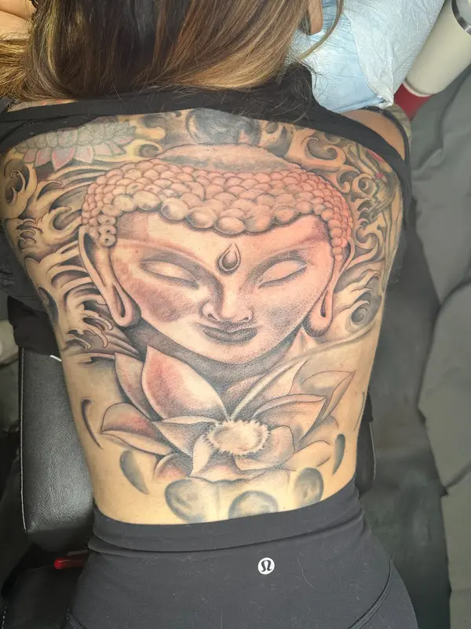
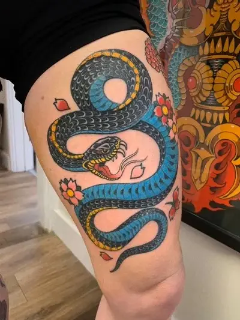
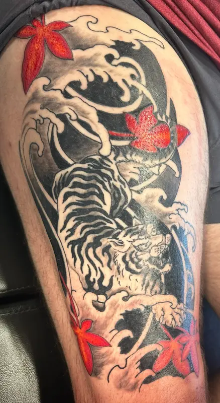

Primary Subject
Warriors, masks, dragons, tigers, koi, birds, and other recognizable forms establish the main focus.
Japanese-Inspired Tattoos • Oklahoma City
Josh Poindexter creates Japanese-inspired tattoos with strong silhouettes, layered subjects, directional movement, and compositions designed around the body. Projects can range from individual pieces to sleeves, backpieces, and connected large-scale work.

Composition first
Large Japanese-inspired tattoos often combine a primary subject with secondary elements, background movement, and controlled areas of open skin. The relationships between those elements matter as much as the detail inside each one.
Josh plans the major silhouette first: where the eye should land, how the subject turns around the arm, leg, shoulder, or back, and where motion should continue. Details are then added without losing the overall readability of the tattoo.
Design building blocks
The strongest direction usually comes from choosing a central subject and allowing the rest of the composition to support it.
Warriors, masks, dragons, tigers, koi, birds, and other recognizable forms establish the main focus.
The design follows muscle groups, joints, and natural curves instead of sitting on the body like a flat rectangle.
Clouds, wind, water, smoke, florals, and other supporting forms connect the composition and guide movement.
Dark anchors, open skin, and controlled color help separate layers and keep the tattoo readable at a distance.
Planning large work
Sleeves, backpieces, and connected projects benefit from planning the full footprint before the first major section is tattooed. That does not require every small detail to be finalized immediately, but it does help protect space for future elements.


Japanese tattoo FAQ
No. A clear primary subject, body placement, preferred mood, and examples of elements you like are enough to begin a productive consultation.
Possibly. The artist needs to see the existing tattoo, its placement, and the remaining open space to determine whether the new composition can connect naturally.
Yes. Japanese-inspired composition can be approached in full color, limited color, or black-and-gray. Contrast and separation still need to be planned carefully.
The number and length of sessions depend on scale, detail, color, placement, healing, and the pace appropriate for the client. Josh can discuss a realistic project structure after evaluating the concept.
Build the whole composition
Bring the imagery that matters to you and let the consultation turn it into a cohesive tattoo.